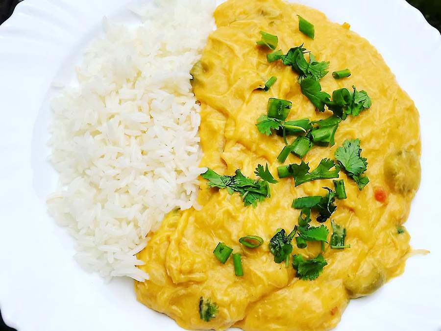

Home
Receita de Vatapá

Descrição
O vatapá é um prato típico do Nordeste brasileiro, feito com camarão, leite de coco e farinha de mandioca.
Ingredientes
- Leite de coco
- Camarão
- Farinha de mandioca
Passos
- Prepare o leite de coco
- Cozinhe o camarão
- Adicione a farinha de mandioca